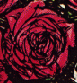

by David Dodd
Assistant Professor, Library
University of Colorado at Colorado Springs
"Spanish lady come to me, she lays on me this rose..."
According to J.E. Cirlot's A Dictionary of Symbols, the
"single rose is, in essence, a symbol of completion, of consummate achievement and perfection. Hence, accruing to it are all those ideas associated with these qualities: the mystic Centre, the heart, the garden of Eros, the paradise of Dante, the Beloved, the emblem of Venus and so on."
An extensive entry on the rose in Funk & Wagnalls Standard Dictionary of Folklore, Mythology, and Legend (Funk & Wagnalls, 1972) includes the following information:
"Originally from Persia, the rose is said to have been brought to the West by Alexander. To the Arabs the rose was a masculine flower. It was anciently a symbol of joy, later of secrecy and silence, but is now usually associated with love."The entry continues for several hundred words, and is worth tracking down.
Gabriele Tergit's wonderful book, Flowers Through the Ages contains many pages on the history and folklore of the rose. Some passages:
"...Soon the mysterious rose, sacred to Venus in earlier times, became the flower of the Virgin Mary, who herself became the Rosa mystica. The temple of Jupiter Capitolinus became St. Peter's, the temple of Juno Lucina the church of S. Maria Maggiore, and the processions honouring the Mother of God walked on rose petals, just as the processions carrying the images of the pagan gods had done." (p. 43)and
"The scholastics derived the origin of the rose from the drops of Christ's blood falling upon a thornbush." (p. 43)and
"The rose was dedicated to the goddess of love, that is, to the eternal mystery of the continuity of life. As such it was the symbol of mystery and secrecy. 'Mystery glows in the rose bed, the secret is hidden in the rose,' sang the Persian poet and perfumer, Farid ud-din Attar, in the twelfth century. A more prosaic explanation is that the folded structure of the rose, by its nature, conceals a secret inner core. ... in Germany, we read in Sebastian Brant's Narrenschiff, [Ship of Fools] in the late fifteenth century: 'What here we do say, shall under roses stay.'" (p. 46)and
"We do not know where the rose comes from.The Dictionary of Christian Art defines the rose as:
Rose fossils, 32,000,000 years old, have been found in Colorado and Oregon; they resemble the East Asian roses more than the American ones of today.
The first record of an authentic European rose is a highly stylized one in a fresco at Knossos in Greece; it dates from the sixteenth century B.C. ... It is possible that Central Asia is the home of the rose. The most beautiful woman of India, the goddess Lakshmi, is supposed to have been born from a rose composed of 108 large and 1,008 small petals.
Every country between twenty and seventy degrees north has its indigenous roses." (pp. 147-148)
"A floral symbol sacred to Venus and signifying love, the quality and nature of which was characterized by the color of the rose. A symbol of purity, a white rose represented innoncence (nonsexual) love, while a pink rose represented first love, and a red rose true love. When held by a martyr, the red rose signified 'red martyrdom' or the loss of life, and the white rose 'white martyrdom' or celibacy. According to Ambrose, the thorns of the rose were a reminder of human finitude and guilt as the roses in the Paradise Garden had no thorns. A thornless rose was an attribute of Mary as the Second Eve." (p. 296)
The literature is voluminous, and the point is easily taken: roses have had tremendous significance for as long as history has been recorded, and likely for long before that. The rose is a metaphor waiting to happen, and peoples have always ascribed to it some aspect of the mystery of life. In the words of Robert Hunter: " ' I've got this one spirit that's laying roses on me. Roses, roses, can't get enough of those bloody roses. The rose is the most prominent image in the human brain, as to delicacy, beauty, short-livedness, thorniness. It's a whole. There is no better allegory for, dare I say it, life, than roses."